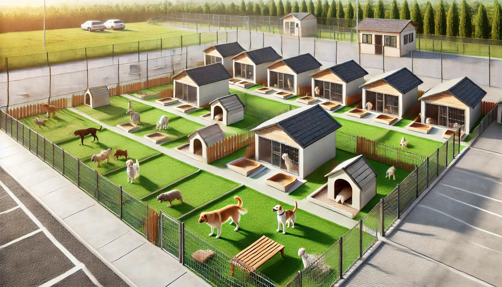

The artifact chosen for category one, Software Engineering and Design, is IT-145 Foundation in App Development. Pet Boarding and Grooming (Pet BAG) is developing software tailored to manage operations for dogs. The goal is to replace the outdated paper-based processes with efficient digital solutions. The system now handles essential functions such as dog check-in and check-out, pet management tasks, feeding schedules and yard times, and administrative features, including updating pet information and tracking payment statuses. It includes specialized capabilities like managing specialized services, available exclusively for pets staying two days or more. The software streamlines operations within the boarding facility, ensuring smooth processes from arrival to departure for all pet guests.

Enhancements to The Pet Hotel Management System
Object-Oriented Programming Principles: Subclassing 'Dog' and 'Cat' from the base 'Pet' class demonstrates proficiency in inheritance, encapsulation, and polymorphism. This ensures organized, reusable, and scalable code.
Language Adaptability: Transitioning the system from Java to Python underscores adaptability and language proficiency, involving the translation of syntax, data structures, and handling mechanisms across programming languages.
Class Hierarchies Design: Designing class hierarchies for different pet types, ensuring the system is flexible and extensible with tailored behavior for dogs and cats, while maintaining a cohesive architecture.
Maintainability and Extensibility: The system was designed with a modular architecture, ensuring it can be maintained and extended easily with new features or changes in the future.
Testing and Debugging Skills: Rigorous testing practices were followed to ensure functional correctness and resolve issues arising from the transition between programming languages.
Documentation and Communication: Clear documentation and communication of technical decisions demonstrate the ability to convey complex concepts and solutions to stakeholders and team members, an essential aspect of software development.
🎬 Watch the Enhancement Video
Computer Engineering and Design Codes - TheDogsCatsHotel
The artifact chosen for category two is IT-145 Foundation in App Development. The focus was on the implementation of algorithms to handle pet scheduling efficiently. A priority queue algorithm was implemented to manage reservations, giving precedence to pets with urgent needs or longer stays. Linked lists were used to track pets' daily activities dynamically. These improvements resulted in more efficient resource allocation and better scheduling management for the staff and pets at the hotel.
Enhancements to The Pet Hotel Management System
LinkedList Data Structure: Implemented LinkedList for managing pet data efficiently, supporting operations like **insertion**, **deletion**, and **traversal**, showcasing proficiency in algorithmic design and data structure implementation.
Adaptability in Programming Languages: Transitioned the system from **Java** to **Python**, demonstrating the ability to adapt to different programming languages and utilize Python’s specific syntax and best practices.
Optimizing System Performance: Solved challenges related to LinkedList operations, improving system performance and managing pet data effectively, showcasing problem-solving abilities and optimization skills.
Software Architecture and Modularization: Integrated the **LinkedList** into the system, demonstrating expertise in software architecture, modular design, and ensuring cohesive functionality across different components of the application.
Adherence to Software Engineering Principles: Followed software engineering principles like **clarity**, **maintainability**, and **scalability** in the code, ensuring the system is robust and adaptable for future enhancements.
The chosen artifact for category three focuses on database integration. The transition to MySQL allowed seamless management of reservations, check-ins, and check-outs. A normalized database structure was designed to prevent redundancy and improve data integrity. The integration ensured real-time updates, enabling the staff to retrieve and manage data effectively. Furthermore, indexing strategies were used to enhance the performance of queries, resulting in faster operations even during peak hours.
Enhancements to The Database System
Database Normalization: Implemented a normalized relational database to eliminate redundancy and ensure data integrity.
Indexing Strategies: Designed efficient indexing for high-priority queries, resulting in faster data retrieval.
Integration with Frontend: Seamlessly integrated the MySQL database with the application backend, allowing real-time updates and data synchronization.
Scalability: Prepared the database for future growth, ensuring that it can handle increased data volumes and additional functionalities.
Security Measures: Enhanced security by implementing user roles, privileges, and encrypted connections for sensitive data.
Hello! I am Richard, a Computer Science major at Southern New Hampshire University. With a passion for coding, I have acquired a strong foundation in problem-solving, algorithms, and software development. Over the years, I have gained experience in various programming languages such as Java, Python, and C++, focusing on creating efficient and optimized solutions.
During my time at SNHU, I completed multiple projects that allowed me to develop not only my technical skills but also my ability to collaborate with teams, manage time effectively, and adapt to new technologies. My goal is to continually learn and apply new concepts to real-world problems.
In addition to my academic background, I am passionate about tech entrepreneurship and have plans to leverage my skills to develop innovative tech solutions. I look forward to contributing to open-source projects and collaborating with others in the tech community.
The Dogs Cats Hotel Enhancement
The original Pet Hotel Management system was enhanced by renaming it to The Dogs Cats Hotel. I transitioned the existing Java code to Python, modernizing the system and optimizing the codebase. A key enhancement was the integration of MySQL, which allows efficient storage and retrieval of pet and owner data, enabling real-time management of reservations, check-ins, and check-outs.
The transition to Python ensured smoother operations and scalability, while the database integration streamlined data handling for the pet hotel. The focus was on creating a pet and owner-friendly experience, making the interface intuitive for staff and ensuring seamless communication between pet owners, their pets, and the hotel staff.
Technologies used: Python, MySQL, Data Structures, GitHub Design.